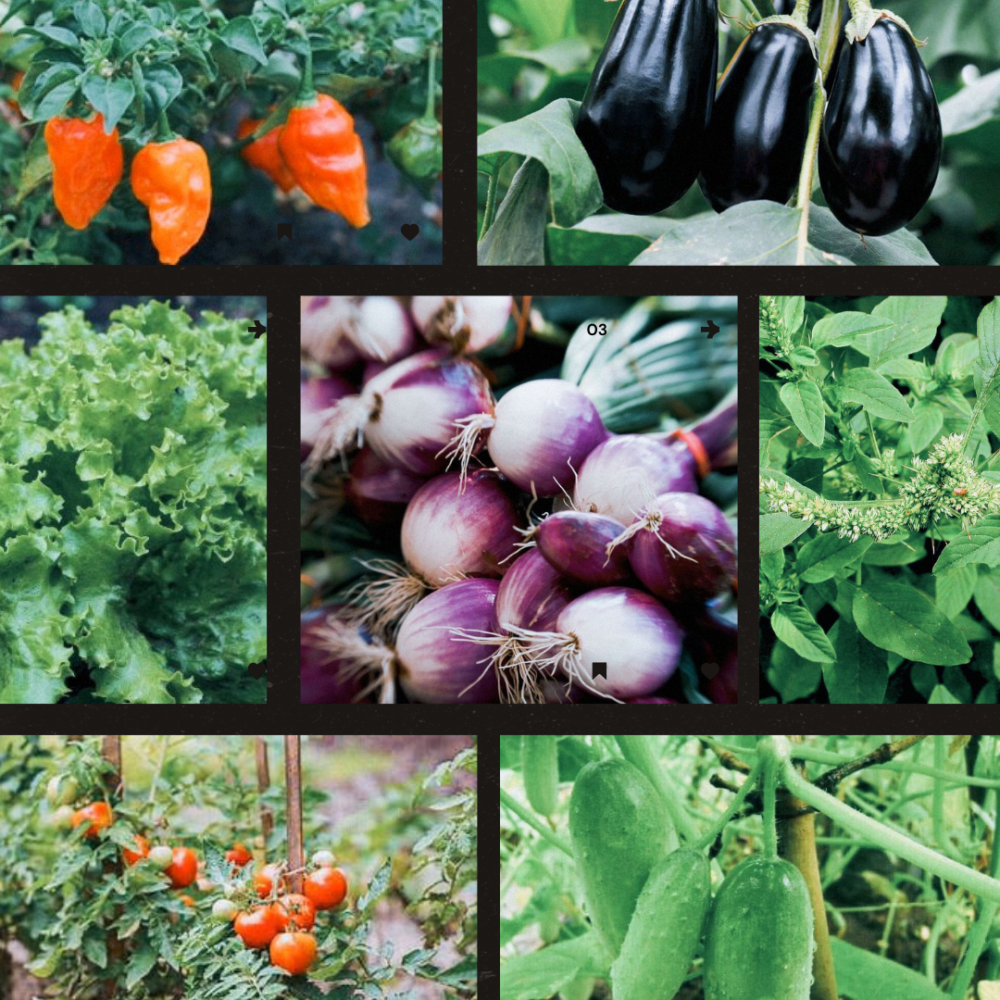
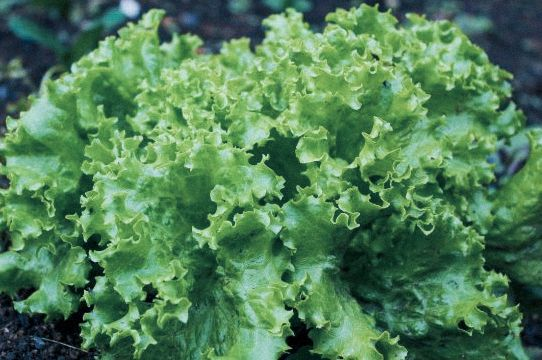
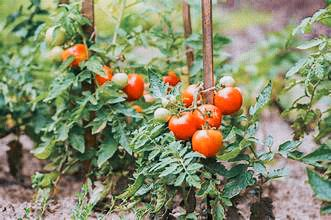
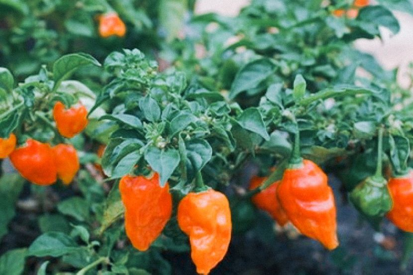
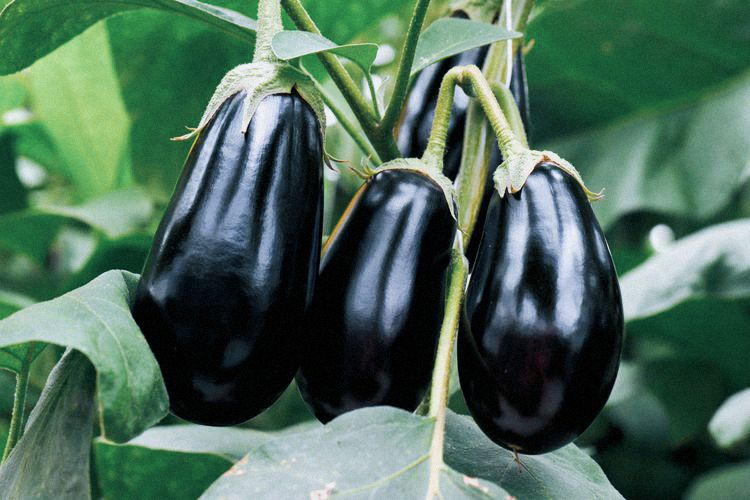
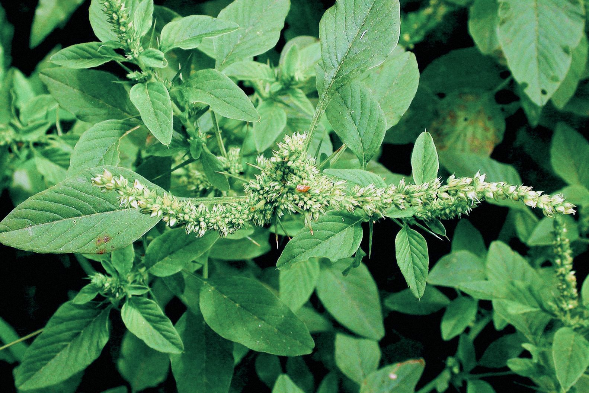
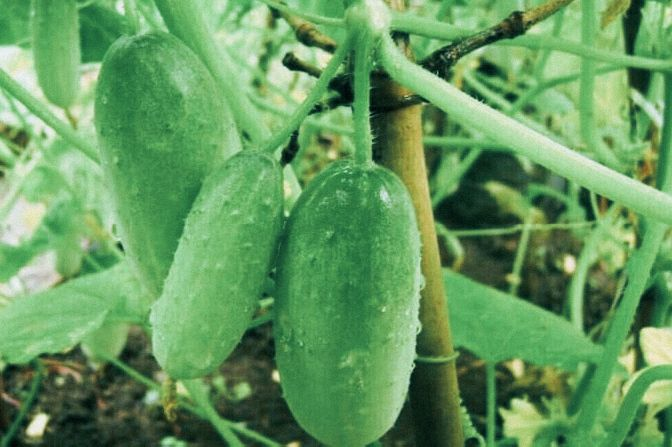
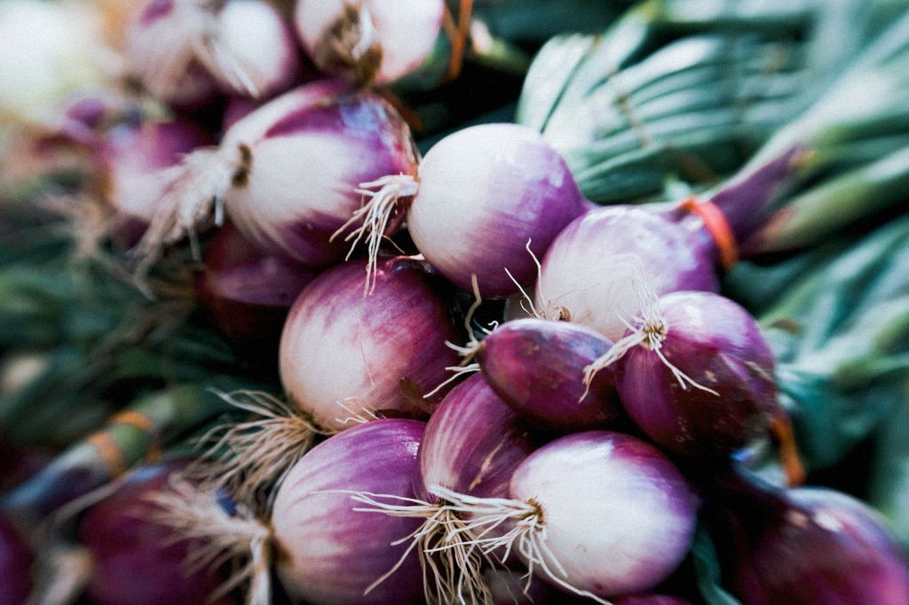

Resize the browser windows to see the effect.
By Dizamira, May, 03 2024
By Dizamira, April, 30 2024
Selada menyukai cuaca yang sejuk dan tumbuh dengan baik bila ditanam dari benih.
Ini juga merupakan pilihan tepat untuk ditanam di pot dan ambang jendela karena akarnya dangkal. Jaga agar tanaman tetap lembab saat benih bertunas, lalu panen saat daunnya panjangnya beberapa inci..
Yang asyiknya lagi, bunga mawar ini ngga ribet buat dirawat. Jadi, buat yang pengen taman minimalis tapi tetep kece, tanaman bunga cantik untuk taman minimalis satu ini bisa jadi solusinya. Yuk coba bawa nuansa romantis ke taman rumah dengan bunga mawar yang memukau.
By Dizamira, Maret, 01 2024
Anda dapat menanam tomat, yang menyukai panas dari biji. Cara lainnya, jika Anda mau, Anda dapat memilih transplantasi.
Perhatikan jenis tomat apa yang Anda beli. Jenis tertentu memiliki buah yang matang dalam waktu singkat, tingginya akan tetap sekitar 30 cm sampai 1,2 meter.
Tomat ceri adalah yang terbaik untuk pemula, dan banyak varietas baru tetap bagus dan kompak sehingga ideal untuk ditanam dalam wadah.
By Dizamira, May, 14 2024
Cabai menyukai cuaca panas, dan mereka tumbuh dengan baik di tanah, wadah, atau di teras dan dek yang cerah. Transplantasi adalah pilihan yang lebih baik, namun Anda selalu bisa menanam cabai dari biji.
By Dizamira, February, 30 2024
Terong adalah tanaman sayuran pecinta panas, dan beberapa jenis lebih lebat sehingga dapat ditanam di pot atau bedengan.
Carilah varietas yang menghasilkan terung panjang, ramping, atau bahkan berbentuk bulat. Yang terbaik adalah menggunakan transplantasi kecuali Anda telah memulainya di dalam ruangan sekitar delapan minggu sebelum musim hujan berakhir.
By Dizamira, Oktober, 30 2024
Bayam adalah tanaman sayuran pecinta cuaca dingin. Jika Anda tinggal di iklim panas, cari varietas bayam yang tahan panas.
Anda bisa memetik daun yang muda, atau biarkan matang untuk digunakan sebagai tumis, sup, atau salad.
By Dizamira, january, 21 2024
Melansir gardeningknowhow.com, mentimun butuh sinar matahari langsung untuk tumbuh subur.
Bisa ditanam di pot ataupun pekarangan rumah untuk varietas yang lebih besar.
Saat menanam mentimun, pilih tempat yang memadai dan tanah yang subur.
Tanah yang subur biasanya mengandung bahan-bahan organik, seperti kompos.
By Dizamira, Desember, 16 2024
Ingin panen bawang tidak lebih dari 3 bulan? Yuk, coba sayuran yang cocok ditanam di pekarangan rumah ini!
Bawang merah memiliki masa panen sekitar 60 harian saja, terbilang cepat, bukan?
Bawang merah sebagai rempah-rempah Indonesia tak perlu diragukan lagi manfaatnya.
Mulai dari bumbu masakan, hingga pengobatan herbal.
@dza_asmra